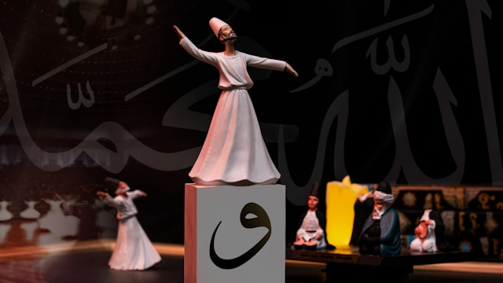

Geri Dön
Mevlana Müzesi, Konya

Mevlana Müzesi Gezi Rehberi: Sevgi ve Hoşgörünün Kalbi
Mevlana Müzesi, Türkiye’nin Konya şehrinde yer alan ve tasavvufun en büyük isimlerinden Mevlana Celaleddin Rumi'nin türbesini barındıran, dünya çapında ünlü bir müzedir. Hem manevi derinliği hem de tarihi önemiyle her yıl milyonlarca ziyaretçiyi çeker. İşte Mevlana Müzesi’ni keşfetmek isteyenler için hazırladığımız rehber:
Müzenin Tarihi ve Önemi
- Mevlana Celaleddin Rumi, 13. yüzyılda yaşamış büyük bir mutasavvıf, şair ve düşünürdür. Mevlana, sevgi, hoşgörü ve insanlık değerleri üzerine kurulu düşünceleriyle tüm dünyada tanınır. Onun öğretileri, Mevlevilik tarikatının temelini oluşturur.
- Mevlana’nın türbesi, 1273 yılında ölümünden sonra inşa edilmiş ve zamanla bir dergah haline gelmiştir. 1926 yılında ise Mevlana Dergahı, müzeye dönüştürülerek halka açılmıştır. Bugün, Mevlana Müzesi, sadece Türkiye'den değil, dünyanın dört bir yanından gelen ziyaretçileri ağırlamaktadır.
Müze Bölümleri ve Gezilecek Yerler
-
Türbe Bölümü
- Yeşil Kubbe (Kubbe-i Hadra): Mevlana Müzesi’nin en dikkat çekici kısmı, yeşil çinilerle kaplı olan ve "Yeşil Kubbe" olarak bilinen türbe bölümüdür. Bu kubbenin altında, Mevlana'nın mezarı bulunmaktadır. Mevlana'nın mezarı, ziyarete gelenlerin dualar ettiği, derin bir manevi atmosfere sahip bir yerdir.
- Mevlana’nın Sandukası: Mevlana'nın mezarını işaret eden ahşap sanduka, üzerindeki hat sanatı ve işlemeleriyle dikkat çeker. Sandukanın üzerindeki örtü, altın ve gümüş ipliklerle işlenmiş olup, Mevlevi dervişlerinin kıyafetlerinden esinlenmiştir.
-
Derviş Hücreleri
- Derviş Hücreleri: Müzenin avlusunda, dervişlerin yaşadığı ve eğitim aldığı hücreler bulunmaktadır. Bu hücrelerde, Mevlevi dervişlerinin günlük yaşamı, ibadetleri ve eğitim süreçlerine dair bilgiler sergilenmektedir. Bu alan, ziyaretçilere Mevlevi yaşam tarzını daha yakından tanıma fırsatı sunar.
-
Semahane ve Mescid
- Semahane: Mevlana Dergahı'nın merkezinde yer alan Semahane, dervişlerin "sema" törenlerini gerçekleştirdiği yerdir. Sema, Mevlevi dervişlerinin döne döne yaptığı manevi bir ibadet şeklidir. Semahane’de, dönemin ritüellerine ve Mevlevi müziğine dair bilgiler bulabilirsiniz.
- Mescid: Semahane’nin yanında yer alan mescid, dervişlerin günlük namazlarını kıldıkları yerdir. Mescid, sade ama derin bir manevi atmosferi yansıtır.
-
Tilavet Odası
- Tilavet Odası: Bu oda, Mevlana Dergahı’nda Kur'an-ı Kerim’in okunduğu yerdir. Odanın duvarları, hat sanatı örnekleriyle süslenmiştir. Tilavet Odası, aynı zamanda Mevlana’nın en yakın öğrencilerinden olan Sultan Veled'in de mezarını barındırır.
-
Müze Bahçesi ve Gül Bahçesi
- Gül Bahçesi: Mevlana Müzesi'nin bahçesi, Mevlana’nın en sevdiği çiçeklerden biri olan güllerle doludur. Bu bahçe, ziyaretçilerin müzenin yoğun manevi atmosferinden sonra dinlenip huzur bulabilecekleri sakin bir alandır.
- Şadırvan: Müze bahçesinde yer alan şadırvan, Osmanlı döneminden kalma olup, geleneksel olarak abdest almak için kullanılmıştır.
-
Müze Koleksiyonu
- El Yazmaları ve Sanat Eserleri: Müze içerisinde, Mevlana’nın eserlerinin orijinal el yazmaları, Osmanlı dönemi hattatlarının eserleri, derviş kıyafetleri ve çeşitli sanat eserleri sergilenmektedir. Bu koleksiyonlar, Mevlevilik kültürüne dair derin bir anlayış sunar.
Ziyaret İçin İpuçları
- Ziyaret Saatleri: Mevlana Müzesi, haftanın her günü ziyarete açıktır. Ancak, yoğun dönemlerde (özellikle Şeb-i Arus haftasında) kalabalık olabilir. Sabah erken saatlerde veya akşamüstü daha sakin bir ziyaret deneyimi yaşayabilirsiniz.
- Giriş Ücreti: Müze girişinde, küçük bir ücret alınmaktadır. Öğrenciler ve yaşlılar için indirimli biletler mevcuttur.
- Müze Kuralları: Müzenin iç mekanlarında fotoğraf çekimi yasaktır. Ziyaret sırasında sessiz olunması ve müze görevlilerinin yönlendirmelerine uyulması önemlidir. Ayrıca, türbeyi ziyaret ederken saygılı bir tavır sergilemek gerekmektedir.
- Eşya Deposu: Müze girişinde, büyük çanta veya sırt çantası taşımak zor olabilir. Müze içinde rahat dolaşabilmek için bu tür eşyalarınızı girişteki emanet dolaplarına bırakabilirsiniz.
- Şeb-i Arus Törenleri:
- : Eğer Aralık ayında ziyaret ediyorsanız, Mevlana’nın ölüm yıldönümü olan Şeb-i Arus törenlerine katılma şansını değerlendirebilirsiniz. Bu törenler, hem Mevlevi kültürünü derinlemesine yaşamak hem de manevi bir deneyim yaşamak için eşsiz bir fırsattır.
Sonuç
Mevlana Müzesi, sadece bir turistik yer değil, aynı zamanda derin bir manevi yolculuğun başladığı bir yerdir. Burada, Mevlana’nın sevgi ve hoşgörü dolu mesajlarını daha yakından hissedebilir, Mevlevi kültürünün derinliklerine inebilirsiniz. Konya’ya yolu düşen herkesin bu eşsiz müzeyi ziyaret ederek, tarihin ve tasavvufun derin izlerini keşfetmesini şiddetle tavsiye ederim.